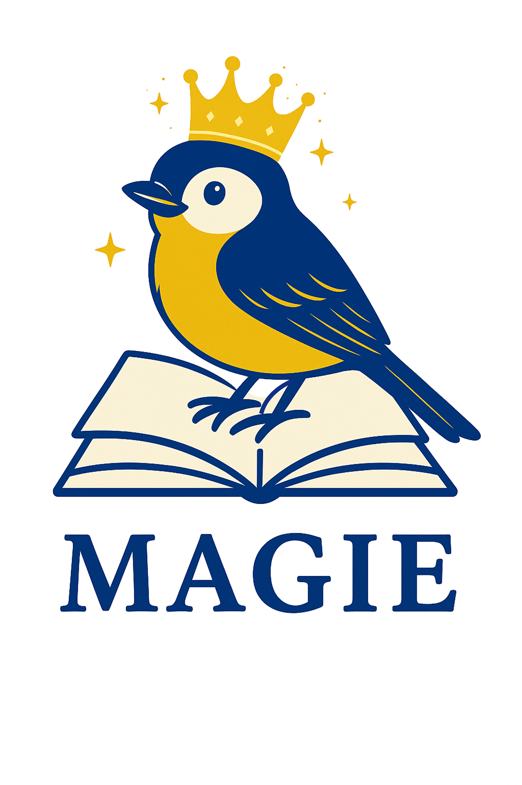

Wir suchen Familien, die mit uns untersuchen möchten, wie unterschiedliche Märchenfassungen auf Kinder wirken – und was beim gemeinsamen Vorlesen geschieht.

Für MAGIE wurden klassische Märchen gemeinsam mit Citizen Scientists behutsam für die Gegenwart weiterentwickelt. Nun untersuchen wir wissenschaftlich, wie Kinder und Eltern diese Geschichten erleben und wie unterschiedliche Märchenfassungen wirken.
Märchen wirken nicht nur über den Text. Entscheidend ist auch, was Kinder daraus machen und welche Gespräche beim gemeinsamen Lesen entstehen. Deshalb findet ein wesentlicher Teil der Studie dort statt, wo Geschichten tatsächlich lebendig werden: in den Familien.
Teilnehmen können Familien mit einem Kind im Alter von 3 bis 7 Jahren. Gemeinsames Vorlesen zuhause wird durch kurze begleitende Erhebungen ergänzt.
Sie erhalten alle Informationen; Ihre Familie wird einer Studienbedingung zugeteilt.
Wir erfassen spielerisch ausgewählte Fähigkeiten und Eindrücke Ihres Kindes.
Sie lesen die vorgesehenen Geschichten und halten die Leseeinheiten kurz fest.
Am Ende folgt eine zweite Erhebung.
Die Zuteilung zu einer von drei Studienbedingungen erfolgt nach dem Zufallsprinzip; eine spätere Startgruppe ist Teil des Studiendesigns.
MAGIE verbindet Citizen Science mit entwicklungspsychologischer Forschung. Gemeinsam mit Citizen Scientists wurden klassische Märchen diskutiert und behutsam für die Gegenwart weiterentwickelt. In der Familienstudie untersuchen wir, wie Kinder und Eltern diese Geschichten erleben.
Unterstützt von den Universitätsbibliotheken Zürich und Basel · Seed Grant Citizen Science Zürich
Melden Sie sich unverbindlich an. Wir senden Ihnen anschliessend die detaillierten Studieninformationen.
Das Formular öffnet Ihr E-Mail-Programm. Alternativ erreichen Sie uns direkt unter magie@ub.uzh.ch.
Unterstützt durch die Universitätsbibliotheken Zürich und Basel · Seed Grant Citizen Science Zürich · mit Unterstützung der Schweizerischen Märchengesellschaft.